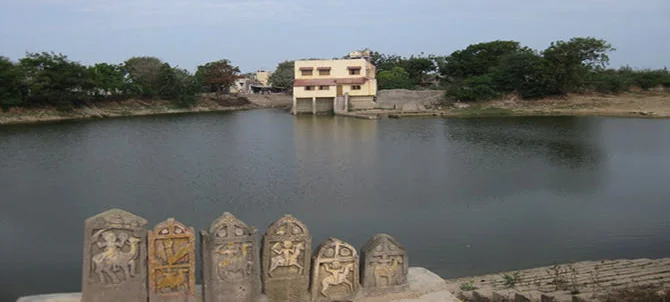

Dwarkadhish Temple: The Heart of Dwarka
Dwarkadhish Temple is one of the most revered temples in India, dedicated to Lord Krishna.
Fun Fact:
~It is believed to be built on the site where Lord Krishna ruled!
Things to Explore at Dwarkadhish Temple:
-
The Grand Architecture:
Marvel at the intricate carvings and stunning architecture of the temple!
-
The Spiritual Atmosphere:
Experience the serene and spiritual ambiance that surrounds the temple!
-
The Festivals:
Participate in various festivals celebrated with great fervor at the temple!
-
The Rituals:
Witness the daily rituals and ceremonies performed by the priests!
-
The Sacred Lake:
Visit the nearby sacred lake, Gomti, which holds religious significance!
Why Visit Dwarkadhish Temple?
!Because it’s a spiritual journey that connects you with the divine essence of Lord Krishna!
Dwarka Beach: Serenity by the Sea
Dwarka Beach offers a tranquil escape with its golden sands and serene waters.
Fun Fact:
~It is believed to be the place where Lord Krishna played with his friends!
Things to Explore at Dwarka Beach:
-
The Scenic Beauty:
Enjoy the breathtaking views of the Arabian Sea and the sunset!
-
Water Sports:
Engage in thrilling water sports like jet skiing and parasailing!
-
The Local Cuisine:
Savor delicious seafood and local delicacies at beach shacks!
-
The Peaceful Ambiance:
Relax and unwind in the peaceful surroundings of the beach!
-
The Nearby Temples:
Visit nearby temples that add to the spiritual charm of the area!
Why Visit Dwarka Beach?
!Because it’s a perfect blend of relaxation, adventure, and spirituality by the sea!

Nageshwar Temple: The Serpent God’s Abode
Nageshwar Temple is one of the twelve Jyotirlingas dedicated to Lord Shiva.
Fun Fact:
~It is believed to be the place where Lord Shiva defeated the demon Daruka!
Things to Explore at Nageshwar Temple:
-
The Majestic Statue:
Marvel at the towering statue of Lord Shiva that stands tall near the temple!
-
The Spiritual Vibes:
Feel the divine energy and spiritual vibes that envelop the temple!
-
The Rituals:
Witness the rituals and ceremonies performed by the priests!
-
The Peaceful Environment:
Experience tranquility in the serene surroundings of the temple!
-
The Nearby Attractions:
Explore nearby attractions that add to the spiritual journey!
Why Visit Nageshwar Temple?
!Because it’s a sacred place that connects you with the divine essence of Lord Shiva!

Gopi Talav: The Enchanted Lake
Gopi Talav is a serene lake surrounded by lush greenery and historical significance.
Fun Fact:
~It is believed to be the place where Gopis used to come to meet Lord Krishna!
Things to Explore at Gopi Talav:
-
The Scenic Beauty:
Enjoy the picturesque views of the lake and the surrounding hills!
-
The Historical Significance:
Learn about the historical significance and legends associated with the lake!
-
The Peaceful Ambiance:
Relax and unwind in the peaceful surroundings of the lake!
-
The Boating Experience:
Enjoy a serene boating experience on the tranquil waters of the lake!
-
The Nearby Temples:
Visit nearby temples that add to the spiritual charm of the area!
Why Visit Gopi Talav?
!Because it’s a perfect blend of natural beauty, history, and spirituality!
Beyt Dwarka: The Island of Legends
Beyt Dwarka is an island off the coast of Dwarka, rich in history and spirituality.
Fun Fact:
~It is believed to be the original residence of Lord Krishna!
Things to Explore at Beyt Dwarka:
-
The Ancient Temples:
Visit ancient temples that hold historical and spiritual significance!
-
The Scenic Views:
Enjoy breathtaking views of the Arabian Sea from the island!
-
The Local Culture:
Experience the local culture and traditions of the island!
-
The Marine Life:
Explore the rich marine life and coral reefs around the island!
-
The Peaceful Environment:
Relax and unwind in the serene surroundings of the island!
Why Visit Beyt Dwarka?
!Because it’s a mystical island that connects you with the legends of Lord Krishna!
Dwarka Lighthouse: Beacon of Hope
Dwarka Lighthouse is a historic lighthouse offering panoramic views of the Arabian Sea.
Fun Fact:
~It has been guiding sailors safely to the shores of Dwarka for decades!
Things to Explore at Dwarka Lighthouse:
-
The Scenic Views:
Enjoy breathtaking views of the sea and the coastline from the top of the lighthouse!
-
The Historical Significance:
Learn about the history and significance of the lighthouse in maritime navigation!
-
The Peaceful Ambiance:
Experience tranquility in the serene surroundings of the lighthouse!
-
The Nearby Attractions:
Explore nearby attractions that add to the charm of the area!
-
The Sunset Views:
Witness stunning sunset views from the lighthouse!
Why Visit Dwarka Lighthouse?
!Because it’s a symbol of hope and a gateway to the enchanting beauty of Dwarka!